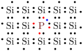
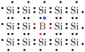

As the name suggets, semiconductors have conductivity between ocnductors and insulators. Semiondur properties have made many important electrical advances possible.
diodes
transistors
operational amplifiers
integrated circuit chips
Light-emitting diodes (LEDs)
photodiodes.
In order to understand semiconductors, we must examine the atomic structure of these materials and how they relate to molecular bonds. Let’s start with Figure 4.1.1 which shows the energy levels for two isolated atoms. Figure4.1.1. Quantum mechanics tells us that electrons can occupy discrete energy levels of an atom. Energy levels fill starting with the lowest and fill upward. Electrons occupying high energy levels are further from the nucleus and also have a larger spatial extent surrounding the nucleus compared to electrons in low energy levels, at least on average. Elecrons of course do not behave like macroscopic objects with definite position, but instead are represented by electron clouds. For the purposes of this class, we will not have to trouble ourselves with this level of detail.
In the atom pictured in Figure 4.1.1, the energy levels represented by solid lines are occupied by electrons, with the term valence electrons used to identify electrons in the highest occupied energy level. The dashed lines represent empty energy levels.
When these two formerly isolated items are brought close to each other such that the valence electron orbitals start overlapping, the pair of atoms can reach a lower energy state by sharing some of their valence electrons. These shared energy levels develop into bands rather than precise discrete levels. Fuller details about the physics of covalent bonds can be found in many Modern Physics or Quantum Mechanics textbooks but will be unnecessary for us. Figure 4.1.2 provides a rough picture of the elements important to us.
Figure4.1.2. In this figure, the valence band represents the last occupied energy band at \(T=0\) Kelvin. The conduction band is the next energy band above the valence band, and the band gap is the energy difference between the top of the valence band and the bottom of the conduction band.
Now, these last three terms are critical to understanding the difference between conductors, semiconductors, and insulators, as illustrated in Figure 4.1.3. Figure4.1.3. We see that conductors have overlapping valence and conduction bands. This means that the valence electrons, which are most loosely held by the nucleus due to their distance from the nucleus, can move relatively easily from one atom to the other using the empty orbital positions in the conduction band. In insulators, it is difficult to move valence electrons between atoms since those electrons would need to gain a large amount of energy to jump across the large bandgap from the valence to conduction band.
Semicondcuctors have non-overlapping valence and conduction bands, but with only a small bandgap between them. This means that at \(T=0\)K, the semiconductor behaves like an insulator. But, at higher temperatures, there is enough thermal energy present that a small population of electrons that had been occupying the valence band instead make the jump into the conduction band and can now move freely.
One common semiconductor material is silicon \(_{14}\)Si which has an electron configuration that can be represented by \(1\text{s}^2\ 2\text{s}^2\ 2\text{p}^6\ 3\text{s}^2\ 3\text{p}^2\text{.}\) This means that Silicon has a full ground state (two electrons in the 1s orbital), a full second energy level (two electrons in the 2s orbital and six electrons in the 2p orbital), and a third energy level with electrons occupying half of the eight available orbital spots (two spots in the 3s orbital and six spots in the 3p orbital). Figure 4.1.4 shows a silicon crystal. Figure4.1.4.Silicon crystal. The shared electrons in covalent bonds fill the valence shell of the silicon crystal. In this crystal, each Si atom is surrounded by eight electrons in the valence band, completely filling it. Each bond is formed by two electrons being shared between a pair of atoms, with each atom contributing one of the two shared electrons.
Now, on its own, silicon is a rather poor semiconductor. That said, the semiconductor properties of a Silicon crystal is improved significantly through doping. The term doping represents the process of mixing a small amount of an impurity into the silicon crystal.
There are two types of doping that are imporant to us here, and they are represented in Figure 4.1.5.
(a)n-type semiconductor.
(b)p-type semiconductor.
Figure4.1.5.Doped semiconductors. In a doped n-type semiconductor, a small amount of phosphorus is added as an impurity into the silicon crystal. Phosphorus has five valence electrons in contrast to the four valence electrons that silicon has. This means that there are nine electrons trying to occupy the eight available spots in the valence band as shown in Figure 4.1.5.(a). Consequently, each ninth phosphorus electron is bumped up into the shared conducting band and can move freely. This is called an n-type semiconductor because negatively-charged electrons are the charge carrier, meaning they are the moving charged particles that comprise any current flowing through the semiconductor.
In a doped p-type semiconductor, a small amount of Boron is added as an impurity into the silicon crystal. Phosphorus has three valence electrons in contrast to the four valence electrons that silicon has. This means that there are seven electrons trying to occupy the eight available spots in the valence band, leaving an open orbital spot in the valence bqand as shown in Figure 4.1.5.(b). Consequently, the holes formed from the missing electron exist in the valence band and represent open spaces into which electrons can move. The reason this is called a p-type semiconductor is pictured in Figure 4.1.6Figure4.1.6. In this figure, a valence electron feels a force due to the applied voltages and moves to fill the hole (step 1), resulting in a new hole at the electron’s former position. This process repeats (step 2) with a different electron moving into the hole location, again swapping places. This continues through steps 3 and 4. The reality of the situation has four electrons each moving one space. it is convenient, instead, to treat the hole (the absence of an electron) as a single positive (relative to an electron) charge that moves four spaces to the left due to the applied voltage, just as a positive charge would move. As such, this hole (which we are treating akin to a positive charge) is considered the charge carrier and can move somewhat freely through the valence band of the semiconductor crystal.